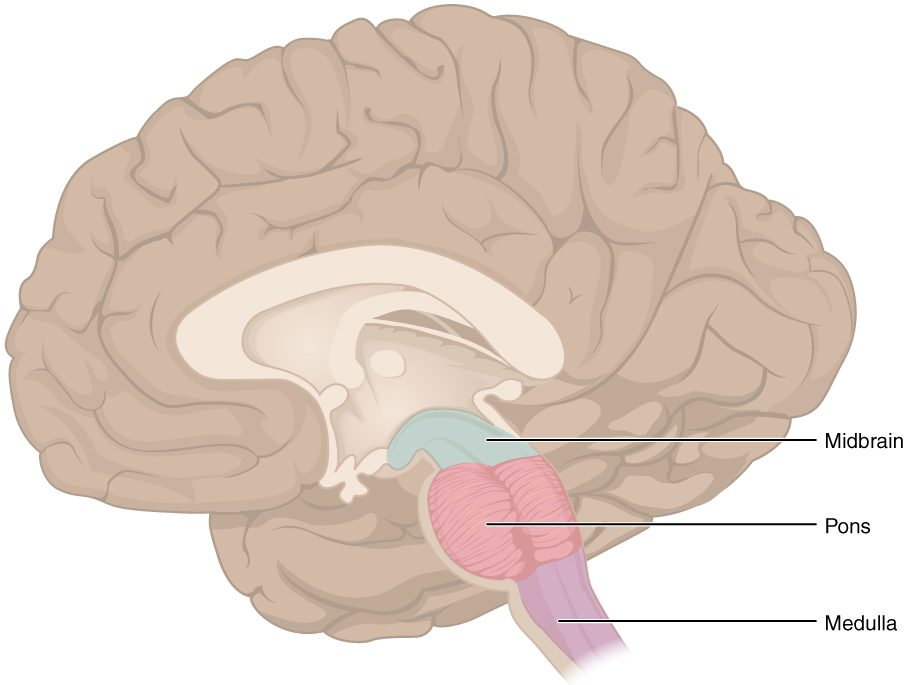

El tallo que lo conecta todo
El tronco del encéfalo (o tronco cerebral) une el cerebro con la médula espinal. Mide unos 7-8 centímetros, apenas el grosor de un pulgar, pero en ese espacio tan pequeño se concentran las funciones más vitales. Por él pasan todas las vías que suben y bajan entre el cerebro y el cuerpo, y en él nacen diez de los doce nervios craneales. Detrás de él está el cerebelo.
Sus tres partes
| Parte | Funciones destacadas | Nervios craneales |
|---|---|---|
| Mesencéfalo (arriba) | Movimientos de los ojos, reflejos visuales y auditivos; contiene la sustancia negra | III y IV |
| Protuberancia (puente, en medio) | Comunica con el cerebelo; masticación, sensibilidad de la cara, expresión facial, sueño REM | V, VI, VII y VIII |
| Bulbo raquídeo (abajo) | Respiración, ritmo cardiaco, tensión arterial, deglución, tos, vómito | IX, X, XI y XII |
En el bulbo, las vías motoras se cruzan al otro lado (decusación de las pirámides): por eso el hemisferio izquierdo controla el lado derecho del cuerpo.
Funciones vitales
- Respiración: los centros respiratorios del bulbo y la protuberancia marcan el ritmo de la respiración de forma automática.
- Corazón y vasos: regulan la frecuencia cardiaca y la tensión, a través del sistema nervioso autónomo y el nervio vago.
- Reflejos de protección: tos, deglución, vómito, parpadeo.
- Despertar y conciencia: la formación reticular, una red de neuronas que recorre todo el tronco, mantiene despierta a la corteza. Si se lesiona, la persona entra en coma. Ver consciencia.
- Sueño: núcleos de la protuberancia generan el sueño REM y la parálisis muscular durante los sueños.
- Neurotransmisores: de núcleos del tronco salen las fibras de serotonina (núcleos del rafe), noradrenalina (locus coeruleus) y dopamina (sustancia negra y área tegmental ventral) que llegan a todo el cerebro.
Cuando se lesiona
Como todo está tan concentrado, una lesión pequeña puede dar síntomas muy llamativos:
- Síndromes cruzados: alteración de un nervio craneal en un lado y debilidad o pérdida de sensibilidad en el lado contrario del cuerpo. Son típicos de los ictus del tronco.
- Visión doble, vértigo, dificultad para tragar o hablar, hipo persistente.
- Síndrome de cautiverio (locked-in): una lesión de la parte anterior de la protuberancia paraliza todo el cuerpo salvo los ojos, con la conciencia intacta. La persona puede comunicarse con el parpadeo o los movimientos verticales de los ojos, y hoy con interfaces cerebro-ordenador.
- Coma, si se afecta la formación reticular.
- Muerte encefálica: su diagnóstico se basa en la ausencia de todos los reflejos del tronco y de respiración.
Causas
- Ictus del territorio vertebrobasilar: la oclusión de la arteria basilar es uno de los ictus más graves, y la trombectomía puede salvar la vida. Ver circulación cerebral.
- Esclerosis múltiple: las lesiones del tronco son frecuentes.
- Herniación por un tumor, una hemorragia o un traumatismo que empujan el cerebro hacia abajo.
- Parkinsonismos atípicos como la parálisis supranuclear progresiva (atrofia del mesencéfalo), la ELA bulbar, el Chiari, tumores (gliomas de tronco en niños), encefalitis.
Fuentes
- Plum F, Posner JB. Plum and Posner's Diagnosis and Treatment of Stupor and Coma. 5.ª ed. Oxford University Press; 2019.
- Blumenfeld H. Neuroanatomy through Clinical Cases. 3.ª ed. Sinauer; 2021.
- Langhorne P, et al. Endovascular thrombectomy for basilar artery occlusion (ATTENTION, BAOCHE). N Engl J Med. 2022;387:1361-72.